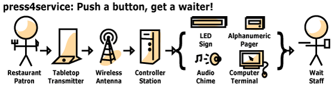

| About How does it work? press4service.com | |||
How does it work? Tabletop transmitterPatrons use a tabletop transmitter to make requests. This transmitter has two buttons, "Request" and "Cancel". The buttons are built into the base of an otherwise standard tabletop display stand. The stand has a clear plastic display area that holds a paper flier that can contain instructions, daily menu specials and such. This display area makes it easy to adapt the transmitter's look to match your decor. Custom transmitters can also be fabricated to your specifications. The transmitter unit is small and self-contained. There are no wires, power cords, antennas, projections or things that can break off. You can move transmitters between tables by just carrying them, no tools are needed. InfrastructureWhen a patron presses a button to make a request, the transmitter sends out a radio signal. It uses a safe, low-power transmission similar to the ones used by garage door openers, although ours is more reliable. The maximum distance between buttons and antennas is about 125 feet, although walls and other dense objects will reduce the range. However, the antennas are small and can be easily concealed in plants, ceiling airspaces and beneath tables. The antennas decode the radio signals and relay them to controller stations, which are small computers. These stations can be placed at staff counters. You can start with one station and grow from there. Multiple stations can talk to each other wirelessly to support restaurants with hundreds of tables. NotificationsWhen a controller station receives a new request, it can notify the wait staff using:
The notification system is very flexible, and can be as timid or obnoxious as you want. If these notification options aren't enough, a custom solution can be developed, e.g. have it flash the lights and run a water fountain.
|
|||
| Copyright © 2004-2006 press4service. All rights reserved. |